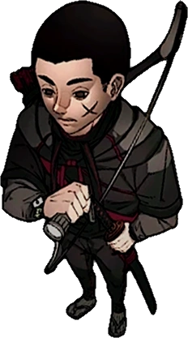
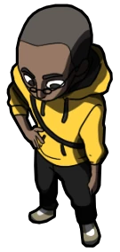

"Vocês acham que eu sou um herói?! Eu sou um guerreiro!" - Joui Jouki

"Eu realmente não lembro de nada. Eu não sei de nada e eu não sei por que toda vez que eu falo isso, eu sinto vontade de chorar porque eu sei que eu não fiz nada! Eu fui julgado por uma coisa que eu não fiz!" - Alexsander Kothe

"Eu sou um Gaudério... E a gente morre por quem a gente ama." - Arthur Cervero